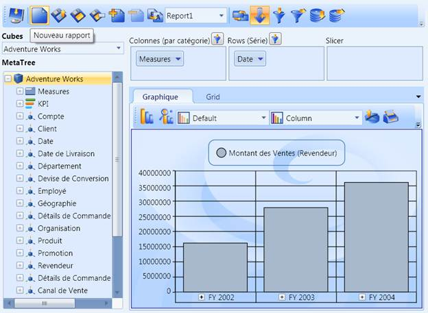
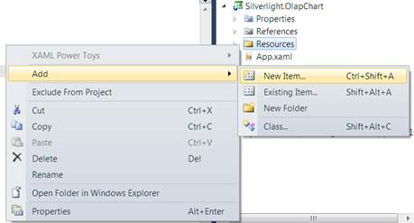
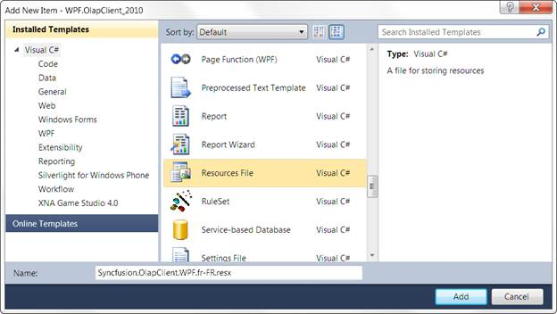
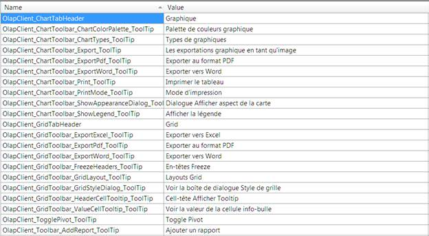

Localization is the key feature for providing IT solutions targeted at global users. Essential BI OLAP Client for WPF allows user to localize the control to a specific locale. The following document briefly explains the step by step procedure to localize an OLAP Client for WPF control.
Use Case Scenarios
Localization helps the user to create an application that targets several cultures.

Figure 75: OlapClient.WPF control localized to French language.
Localizing an OLAP Client in an Application
The OLAP Client for WPF supports “resx” based localization. The following steps need to be performed, in order to localize the control.
Translation
Resource File and File name conventions
<SupportedCultures> Tag inclusion into the project file
Specifying the CurrentUICulture
See Also:
Translation
The first step in localization is translating the strings that can be localized to the destination locale. Basically, OlapClient.WPF contains control assemblies such as OlapChart.WPF and OlapGrid.WPF and tools assemblies such as OlapShared.WPF and OlapTools.WPF within it. So, it is mandatory to localize those assemblies as well. The following tables contain the Localization Keys and the Strings to be localized for OlapClient.WPF, OlapChart.WPF, OlapGrid.WPF, OlapShared.WPF and OlapTools.WPF assemblies. Translate the second column in each table, which contains the strings to be localized to the target locale.
 Note: Localization Key field should be same for
the all locales. Do not translate it.
Note: Localization Key field should be same for
the all locales. Do not translate it.
Table 1: Localization Strings Table for OlapClient.WPF
|
Localization Key |
Strings to be localized |
|
OlapClient_ChartTabHeader |
Chart |
|
OlapClient_ChartToolbar_ChartColorPalette_ToolTip |
Chart Color Palette |
|
OlapClient_ChartToolbar_ChartTypes_ToolTip |
Chart Types |
|
OlapClient_ChartToolbar_Export_ToolTip |
Exports Chart as an Image |
|
OlapClient_ChartToolbar_ExportPdf_ToolTip |
Export to Pdf |
|
OlapClient_ChartToolbar_ExportWord_ToolTip |
Export to Word |
|
OlapClient_ChartToolbar_Print_ToolTip |
Print Chart |
|
OlapClient_ChartToolbar_PrintMode_ToolTip |
Print Mode |
|
OlapClient_ChartToolbar_ShowAppearanceDialog_ToolTip |
Show Chart Appearance Dialog |
|
OlapClient_ChartToolbar_ShowLegend_ToolTip |
Show Legend |
|
OlapClient_ColumnAxis_HeaderText |
Columns (Categorical) |
|
OlapClient_ColumnRowSubsetFilter_ToolTip |
Subset Filter |
|
OlapClient_Connect_Dlg_Browse |
Browse |
|
OlapClient_Connect_Dlg_Cancel |
Cancel |
|
OlapClient_Connect_Dlg_Connection_String_Header |
Connection String |
|
OlapClient_Connect_Dlg_Credential |
Credential |
|
OlapClient_Connect_Dlg_Data_Source_Header |
Data source |
|
OlapClient_Connect_Dlg_DatabaseName |
Database Name: |
|
OlapClient_Connect_Dlg_EnterCredential_Header |
Enter credentials |
|
OlapClient_Connect_Dlg_Header |
Server options |
|
OlapClient_Connect_Dlg_Offline_Cube_Header |
Offline Cube |
|
OlapClient_Connect_Dlg_Ok |
Ok |
|
OlapClient_Connect_Dlg_Password |
Password: |
|
OlapClient_Connect_Dlg_Server_Header |
Server |
|
OlapClient_Connect_Dlg_ServerName |
Server Name: |
|
OlapClient_Connect_Dlg_User_Name |
User Name: |
|
OlapClient_ConnectOptions_Dlg_Title |
Connection Option |
|
OlapClient_CubeDimensionBrowser_HeaderText |
MetaTree |
|
OlapClient_CubeSeletor_HeaderText |
Cubes |
|
OlapClient_CubeSeletor_ToolTip |
Cube Selector |
|
OlapClient_GridTabHeader |
Grid |
|
OlapClient_GridToolbar_ExportExcel_ToolTip |
Export to Excel |
|
OlapClient_GridToolbar_ExportPdf_ToolTip |
Export to Pdf |
|
OlapClient_GridToolbar_ExportWord_ToolTip |
Export to Word |
|
OlapClient_GridToolbar_FreezeHeaders_ToolTip |
Freeze Headers |
|
OlapClient_GridToolbar_GridLayout_ToolTip |
Grid Layouts |
|
OlapClient_GridToolbar_GridStyleDialog_ToolTip |
Show Grid Style Dialog |
|
OlapClient_GridToolbar_HeaderCellTooltip_ToolTip |
Show Header Cell Tooltip |
|
OlapClient_GridToolbar_ValueCellTooltip_ToolTip |
Show Value Cell ToolTip |
|
OlapClient_ReportName_Dlg_ReportName |
Report Name |
|
OlapClient_RowAxis_HeaderText |
Rows (Series) |
|
OlapClient_SlicerAxis_HeaderText |
Slicer |
|
OlapClient_TogglePivot_ToolTip |
Toggle Pivot |
|
OlapClient_Toolbar_AddReport_ToolTip |
Add Report |
|
OlapClient_Toolbar_ColumnFilter_ToolTip |
Column Filter |
|
OlapClient_Toolbar_ConnectionOption_ToolTip |
Connect to Server |
|
OlapClient_Toolbar_LoadReport_ToolTip |
Load Report |
|
OlapClient_Toolbar_NewReport_ToolTip |
New Report |
|
OlapClient_Toolbar_RemoveReport_ToolTip |
Remove Report |
|
OlapClient_Toolbar_RenameReport_ToolTip |
Rename Report |
|
OlapClient_Toolbar_ReportList_ToolTip |
Report List |
|
OlapClient_Toolbar_RowFilter_ToolTip |
Row Filter |
|
OlapClient_Toolbar_SaveAsReport_ToolTip |
Save As Report |
|
OlapClient_Toolbar_SaveReport_ToolTip |
Save Report |
|
OlapClient_Toolbar_ShowExpanders_ToolTip |
Show Expanders |
|
OlapClient_Toolbar_SortingColumn_ToolTip |
Sorting Column |
|
OlapClient_Toolbar_SortingRow_ToolTip |
Sorting Row |
Table 2: Localization Strings Table for OlapChart.WPF
|
Localization Key |
Strings to be localized |
|
OlapChart_Dialog_Appearance_Tab |
Appearance |
|
OlapChart_Dialog_Axis_Tab |
Axis Labels |
|
OlapChart_Dialog_AxisLabel_FontColor |
Font Color |
|
OlapChart_Dialog_AxisLabel_FontFace |
Font Face |
|
OlapChart_Dialog_AxisLabel_FontStyle |
Font Style |
|
OlapChart_Dialog_BackgroundStyle_Header |
Background Style |
|
OlapChart_Dialog_BorderColor |
Color: |
|
OlapChart_Dialog_BorderStyle_Header |
Border Style |
|
OlapChart_Dialog_BorderWidth |
Width: |
|
OlapChart_Dialog_CancleButton |
Cancel |
|
OlapChart_Dialog_Chart_Tab |
Chart |
|
OlapChart_Dialog_ChartBackground |
Chart Control: |
|
OlapChart_Dialog_ChartInterior |
Chart Interior: |
|
OlapChart_Dialog_ChartPalette |
Chart Palette: |
|
OlapChart_Dialog_ChartStyle_Header |
Chart Style |
|
OlapChart_Dialog_ChartType |
Chart Type: |
|
OlapChart_Dialog_CircleAsSymbol |
Circle |
|
OlapChart_Dialog_LabelVisibility_Header |
Label Visibility |
|
OlapChart_Dialog_LegendCheckBoxVisiblity |
Show CheckBox |
|
OlapChart_Dialog_LegendPosition |
Position: |
|
OlapChart_Dialog_Legends_Header |
Legends |
|
OlapChart_Dialog_LegendVisibility |
Show Legend |
|
OlapChart_Dialog_OkButton |
Ok |
|
OlapChart_Dialog_Point_Labels_Tab |
Point Labels |
|
OlapChart_Dialog_RectanglAsSymbol |
Rectangle |
|
OlapChart_Dialog_SeriesNameAsLabelContent |
Series Name |
|
OlapChart_Dialog_SymbolVisibility_Header |
Symbol Visibility |
|
OlapChart_Dialog_Title |
Chart Appearance Dialog |
|
OlapChart_Dialog_TriangleAsSymbol |
Triangle |
|
OlapChart_Dialog_XAxis_Header |
X Axis |
|
OlapChart_Dialog_XValueAsLabelContent |
X Value |
|
OlapChart_Dialog_Yaxis_Header |
Y Axis |
|
OlapChart_Dialog_YValueAsLabelContent |
Y Value |
Table 3: Localization Strings Table for OlapGrid.WPF
|
Localization Key |
Strings to be localized |
|
OlapGrid_Column_Tooltip |
Columns : |
|
OlapGrid_Dialog_Background_Color |
Background Color |
|
OlapGrid_Dialog_Cancel |
Cancel |
|
OlapGrid_Dialog_CellStyles |
Cell Styles |
|
OlapGrid_Dialog_ColumnHeader |
Column Header |
|
OlapGrid_Dialog_ColumnSummary |
Column Summary |
|
OlapGrid_Dialog_Font_Color |
Font Color |
|
OlapGrid_Dialog_Font_Name |
Font Name |
|
OlapGrid_Dialog_Font_Size |
Font Size |
|
OlapGrid_Dialog_Font_Style |
Font Style |
|
OlapGrid_Dialog_Foreground_Color |
Foreground Color |
|
OlapGrid_Dialog_HeaderFont |
Header Font |
|
OlapGrid_Dialog_HeaderStyle |
Header Style |
|
OlapGrid_Dialog_Ok |
Ok |
|
OlapGrid_Dialog_RowHeader |
Row Header |
|
OlapGrid_Dialog_RowSummary |
Row Summary |
|
OlapGrid_Dialog_SummaryFont |
Summary Font |
|
OlapGrid_Dialog_SummaryStyle |
Summary Style |
|
OlapGrid_Dialog_Title |
Apply Style |
|
OlapGrid_Measure_Tooltip |
Measure : |
|
OlapGrid_Row_Tooltip |
Rows: |
|
OlapGrid_Value_Tooltip |
Values : |
Table 4: Localization Strings Table for OlapShared.WPF
|
Localization Key |
Strings to be localized |
|
OlapTools_FilterSorting_Dlg_Cancel |
Cancel |
|
OlapTools_FilterSorting_Dlg_EmptyResult_Header |
Empty Results |
|
OlapTools_FilterSorting_Dlg_Filter_Tab |
Filter |
|
OlapTools_FilterSorting_Dlg_Filter1_Header |
Filter 1 |
|
OlapTools_FilterSorting_Dlg_Filter2_Header |
Filter 2 |
|
OlapTools_FilterSorting_Dlg_FilterEmptyColumns |
Filter Empty Columns |
|
OlapTools_FilterSorting_Dlg_FilterEmptyRows |
Filter Empty Rows |
|
OlapTools_FilterSorting_Dlg_FilterOn |
Filter On |
|
OlapTools_FilterSorting_Dlg_FilterOnValue |
Value |
|
OlapTools_FilterSorting_Dlg_Header |
Filtering and Sorting |
|
OlapTools_FilterSorting_Dlg_OnColumn |
On Column |
|
OlapTools_FilterSorting_Dlg_OnRow |
On Row |
|
OlapTools_FilterSorting_Dlg_Sort_Header |
Sort |
|
OlapTools_FilterSorting_Dlg_Sort_Preserver_Hierarchy |
Preserve Hierarchy |
|
OlapTools_FilterSorting_Dlg_SortAsc |
Ascending |
|
OlapTools_FilterSorting_Dlg_SortDesc |
Descending |
|
OlapTools_FilterSorting_Dlg_Sorting_Tab |
Sorting |
|
OlapTools_FilterSorting_Dlg_SortingOn |
Sorting On |
|
OlapTools_FilterSorting_Dlg_Update |
Update |
|
OlapTools_FilterSorting_FilterCondition |
Condition |
Table 5: Localization Strings Table for OlapTools.WPF
|
Localization Key |
Strings to be localized |
|
OlapTools_Editor_Cancel |
Cancel |
|
OlapTools_Editor_Ok |
Ok |
|
OlapTools_Editor_SplitButton_Delete_ToolTip |
Delete |
|
OlapTools_Editor_SplitButton_MoveDown_ToolTip |
Move Down |
|
OlapTools_Editor_SplitButton_MoveUp_ToolTip |
Move Up |
|
OlapTools_MeasureEditor_Remove_ContextMenu |
Remove |
|
OlapTools_MeasureEditor_Title |
Measure Editor |
|
OlapTools_MemberEditor_CheckAll_UnCheckAll |
Check / UnCheck All |
|
OlapTools_MemberEditor_Title |
Member Editor |
|
OlapTools_SubsetFilter_DropDown_Text |
Max number of records to be displayed. |
Resource File and File Name Conventions
After translating the strings that can be localized, perform the following in the application:
1. Right-click the project file to create a new folder in the project.
2. Select Add-> New Folder.
3. Re-name the folder as Resources.
Note: The folder name should strictly be
Resources.
4. Now, right-click the Resources folder to create a new resource file in the Visual Studio project file.
5. Navigate to Add -> New Item.

Figure 76: Add New Item ContextMenu
The Add New Item dialog will display.

Figure 77: Add Item Dialog
6. Select Resources File from the list. Name the resource file: Syncfusion.OlapClient.WPF.fr-FR.resx then click Add.
Note: The resource file name should strictly be in
the format “Syncfusion.OlapClient.WPF.<<Culture
Code>>.resx”.
Examples:
· Syncfusion.OlapClient.WPF.es.resx
· Syncfusion.OlapClient.WPF.ja-JP.resx
· Syncfusion.OlapClient.WPF.it-IT.resx
Similarly, for OlapChart.WPF assembly, add one more new resource file. Name the resource file Syncfusion.OlapChart.WPF.fr-FR.resx.
For OlapGrid.WPF assembly, add one more new resource file. Name the resource file Syncfusion.OlapGrid.WPF.fr-FR.resx.
For OlapShared.WPF assembly, add one more new resource file. Name the resource file Syncfusion.OlapShared.WPF.fr-FR.resx.
For OlapTools.WPF assembly, add one more new resource file. Name the resource file Syncfusion.OlapTools.WPF.fr-FR.resx.
Now, the new resource file is included successfully.
7. Copy and paste the translated locale to the resource file created in the earlier step.

Figure 78: A Sample Resource File After Localization
<SupportedCultures> Tag Inclusion into the Project File
In Silverlight, we need to specify the list of supported cultures using the <SupportedCultures> tag in the project file. To specify the supported cultures in a project file, perform the following steps:
1. Go to Solution Explorer, Right-click the project file and select Unload.
2. Again, right click the project file and select Edit. Now, the project files will appear in the XML editor in Visual Studio.
3. Find the tag <SupportedCultures> andthenspecify the culture code, which is already appended in the resource file name.
Example: <SupportedCultures>fr-FR<SupportedCultures>
You can specify multiple cultures as well, by using the (;) semi-colon operator to separate the culture codes.
Example:<SupportedCultures>en-US;fr;fr-FR;ru;ru-RU;</SupportedCultures>
4. Now, right click the project name and select Reload.
Now, the supported cultures are included in the project file.
Specifying the CurrentUICulture
Now, you need to specify the CurrentUICulture of the application. We can specify the CurrentUICulture either from Application_Startup in App.XMAL.csor from the constructor on the MainPage (If you are specifying the current culture on the main page, then make sure, this is assigned before calling the InitializeComponent method). The following code snippets describe the two variations.
|
[C#]
public MainPage() { System.Threading. Thread .CurrentThread.CurrentCulture = new System.Globalization. CultureInfo ("fr-FR");
System.Threading. Thread .CurrentThread.CurrentUICulture = new System.Globalization. CultureInfo ("fr-FR");
InitializeComponent(); }
|
|
[VB]
Public Sub New() System.Threading. Thread .CurrentThread.CurrentCulture = New System.Globalization. CultureInfo ("fr-FR")
System.Threading. Thread .CurrentThread.CurrentUICulture = New System.Globalization. CultureInfo ("fr-FR")
InitializeComponent() End Sub |
(Or)
|
[C#]
private void Application_Startup( object sender, StartupEventArgs e) { System.Threading. Thread .CurrentThread.CurrentUICulture = new System.Globalization. CultureInfo ("fr-FR");
System.Threading. Thread .CurrentThread.CurrentUICulture = new System.Globalization. CultureInfo ("fr-FR");
this .RootVisual = new MainPage (); }
|
|
[VB]
Private Sub Application_Startup(ByVal sender AsObject, ByVal e As StartupEventArgs ) System.Threading. Thread .CurrentThread.CurrentUICulture = New System.Globalization. CultureInfo ("fr-FR")
System.Threading. Thread .CurrentThread.CurrentUICulture = New System.Globalization. CultureInfo ("fr-FR")
Me.RootVisual = New MainPage () End Sub |